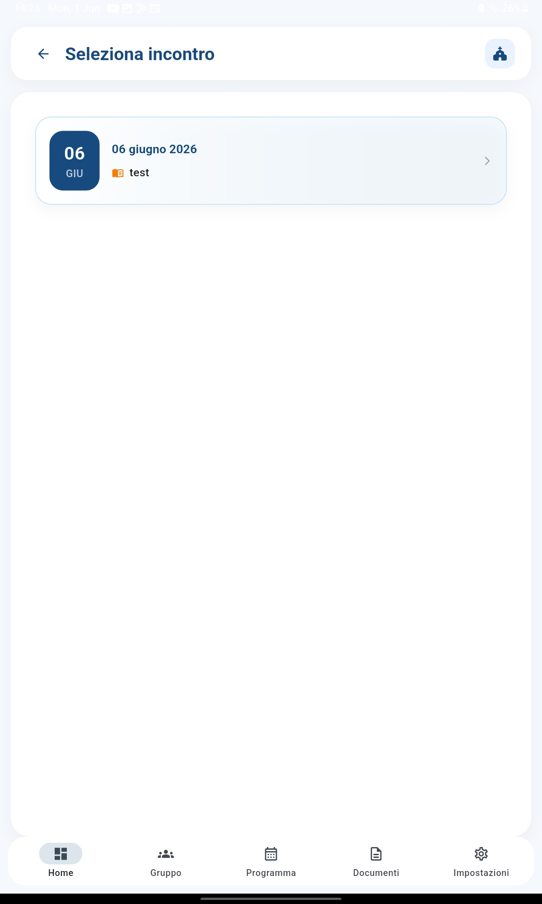
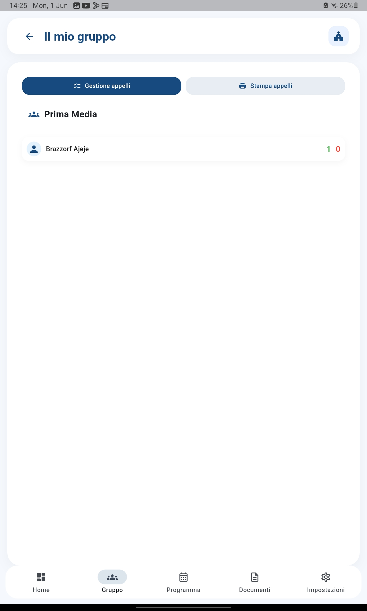
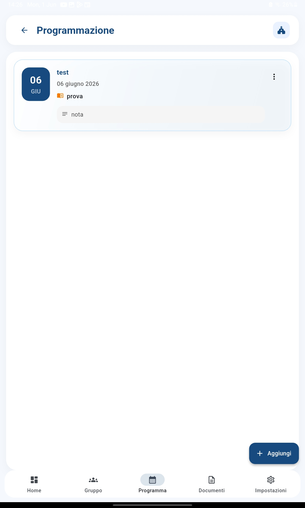

Registra chi c'è e chi manca in modo semplice, veloce e sempre aggiornato
Il modulo Presenze ti permette di fare l'appello durante ogni incontro di catechismo con pochi tap. Puoi registrare chi è presente, assente o giustificato, vedere le statistiche di ogni ragazzo e tenere d'occhio chi supera il numero massimo di assenze consentite.
Prima di registrare le presenze, crei una giornata di incontro con titolo, data e gruppo. Poi, con un tap su ogni nome, puoi segnare rapidamente:
L'interfaccia è pensata per essere usata durante l'incontro, rapida e senza distrarre.



La griglia riepilogativa ti mostra tutti i ragazzi in riga e tutte le giornate in colonna. Ogni cella è colorata in base allo stato (verde/rosso). In un colpo d'occhio vedi la frequenza di ogni ragazzo e puoi individuare chi sta mancando spesso.

Dal profilo di ogni ragazzo puoi vedere quante presenze, assenze e giustificazioni ha accumulato, con tanto di percentuale di frequenza e un grafico che mostra l'andamento nel tempo. Utile per i colloqui con i genitori e per la verifica annuale.
Puoi impostare un numero massimo di assenze (il default è 6). Quando un ragazzo raggiunge o supera questa soglia, CatechHub te lo segnala con un badge rosso accanto al nome e un avviso nell'app. Così puoi intervenire tempestivamente con la famiglia.